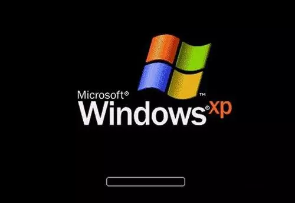

原文连接:https://www.cnblogs.com/xuanyuan/p/12071587.html
自Windows帝国建国，传至XP一朝，已历十世。
今朝廷腐败无能，木马病毒之徒汹汹当朝，流氓软件之辈纷纷秉政。
天降大任于吾辈，自当扫清寰宇，还天下太平。
361杀毒公司成立的第一天，公司老总发表了上面慷慨激昂的演讲。
361杀毒公司汇集天下英才，来到Windows帝国后，迅速构建了强大的安全防御战线，不出半年，就打的病毒木马丢盔弃甲，流氓软件更是望风而逃。
不到两三年的光景，361杀毒公司就占据了比特宇宙中绝大多数的Windows帝国市场。
<-----------------市场拓展----------------->
然而风光的背后，361杀毒公司却陷入财务危机。
经过高层的讨论，决定成立361安全卫士公司，拓展公司盈利的方式。
361安全卫士公司很快成立，市场部很快拿出了盈利方案：我们可以利用在比特宇宙中的统治地位，帮助其他公司拓展业务，收他们拓展费。市场部很快和飓风影音公司、QB音乐公司、闪电看看播放器公司等达成了战略合作，没多久就赚到了不菲的拓展费。后来，他们又盯上了IE浏览器公司，和千度搜索、hao235导航等网站公司达成战略合作，通过修改IE公司的首页，赚取这些公司的推广费。再后来，361集团惦记起了原来那些流氓软件公司，只要交够保护费，就可以贴上361集团的标签，正大光明的在Windows帝国开展业务。
361集团赚的盆满钵满，随着集团的壮大，高层不再满足于为别人做嫁衣，决定自己进军这些领域。很快361集团成立了搜索子公司、浏览器子公司、视频播放器子公司、音乐播放器子公司等等，Windows帝国中，361集团只手遮天，即使是国企IE公司也是敢怒不敢言。
然而，361集团进军搜索行业触怒了行业巨头千度搜索集团，千度集团决定反制成立了千度杀毒公司。而QB集团和猎狗集团不甘361坐大，也纷纷成立QB电脑管家公司、猎狗毒霸公司。一时之间，Windows帝国安全市场，迎来了四大玩家。
<-----------------加速球之战----------------->
361集团很快拿出对策，通知比特宇宙中所有361公司，拦截一切千度集团、QB集团、猎狗集团的人进入Windows帝国，阻止他们发展业务。
不过361集团的拦截作用有限，其他几大集团的人使用随机名字，乔装打扮，想尽办法还是混了进来。
眼看竞争对手地盘扩展迅速，361安全卫士公司推出了“加速球”产品，只要人类一点击，就通知驱动部门将竞争对手干掉。因为这些驱动部门工作在帝国权限极高的内核区域，手握帝国所有公司的生杀大权。
千度杀毒和QB管家很快派人分析出了这个加速球原理，安排自家公司的驱动部门拦截加速球发给361公司的消息，361公司的驱动部门收不到加速球的消息，加速球很快成为了摆设。
无独有偶，千度杀毒和QB管家也推出了自己的加速球产品，以彼之道还施彼身，实现对361公司的绞杀。这一下，人类的电脑桌面一下子出现了好多个加速球悬浮窗口，热闹非凡。

<-----------------关机之战----------------->
面对敌人的反扑，361公司始料未及，不过经验老道的他们毕竟在Windows帝国发展多年，安插在帝国内核区域的眼线告诉他们：Windows帝国每日晚间都会关机休息，直到第二天天亮再启动运作。而在关机之前，帝国政府会派人通知一些重要的单位，让他们做好数据保存工作，防止关机给这些单位带来经济损失。而具体要通知哪些单位，帝国政府维护了一个名单。只要把自己加入到这个名单中，就能在关机的时刻对自己进行修复。
靠着这一招，361公司死而复生，成为了打不死的小强！
不仅如此，361公司决定还击，加密了公司和驱动部门的通信内容，也隐藏了驱动部门的名字，这一下QB管家们再也无法拦截他们的通信，361公司的加速球又开始成为悬在千度杀毒和QB管家头上的利剑，让他们随时面临灭顶之灾。
不过，聪明的他们倒是很好学，很快就学会了361公司死而复生之法！都在抢着把自己加入到帝国政府关机通知的名单之中，以此实现复活。不仅如此，为了避免被后面得到通知的对手再次拿下，一方面想尽办法把对手的名字划掉，一方面想尽办法把自己放到名单的最后一个。QB管家尤其更甚，为了确保万无一失，在名单中前前后后安插了5个自己的人。
<-----------------开机之战----------------->
关机通知名单成为了兵家必争之地，老练的361公司明修栈道，暗度陈仓，一边和对手拉锯竞争名单卡位战，一边悄悄开辟新的战场。帝国政府开机会陆陆续续将各家公司注册的驱动程序运行起来，而这个启动顺序则是大有玄机。361公司仔细研究了帝国政府对驱动程序启动的顺序规则，于是将自己的驱动程序安插为最早一批随着帝国政府核心部门一起启动，而这时候，竞争对手的驱动程序还躺在硬盘中呼呼大睡呢。在这个时刻干掉对手，神不知鬼不觉！

这一招果然狠辣，千度杀毒、QB管家和猎狗毒霸都节节败退，在比特宇宙中的市场逐渐被蚕食。
然而不久，这几大公司也逐渐发现了361公司暗度陈仓之法，加入到开机启动顺序卡位战。
<-----------------帝国重生----------------->
随着战争的深入，蓝天白云的Windows帝国变得风雨飘摇，因为帝国内核中这几家公司的斗争，逐渐影响到帝国正常的社会运转，蓝屏现象时有发生。
帝国开始意识到事情的严重，不再放任这些公司在自己的国土随意开战。终于有一天，帝国宣布内阁改组，改年号从Windows XP到Windows 10，从上到下进行改革，并成立专门的国有企业Windows Defender负责帝国的安全防御，出台新的规定限制商业公司随意加载驱动程序到帝国内核工作。
几大集团的行为受到帝国约束，有的开始逐渐关门倒闭，Windows帝国终于重换新生。
未完待续·······
精彩回顾：